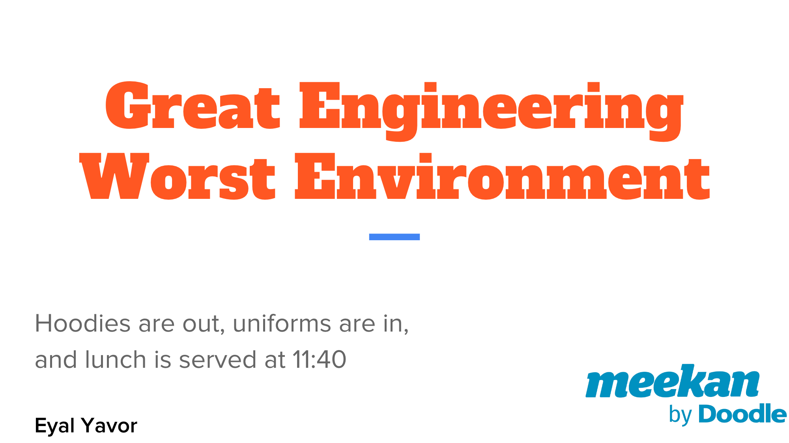

Imagine the worst possible engineering work environment: Strict dress code, fast employee turnaround with median age of 19, people gone for 2 weeks in the middle of a project, requirements and priorities that change monthly. Oh, and there’s no internet access.
Welcome to the Israeli Intelligence Unit, which despite its limitations produces world-class results.
Learn how all these workplace disadvantages turned to the unit’s advantage, and what lessons you can take from it.
This talk presents a peek into a different development environment - where the tools of the trade and the goals of work are unlike what you’re used to. There’s no technical background knowledge required. It helps to know first-hand how a 30-40 people organization works, to appreciate the nuances of the difficulties. You’ll leave the talk with some insights on turning limitations into advantages, and how to extract the most out of them. At the very least, you’ll know you definitely don’t have the worst working conditions in tech.